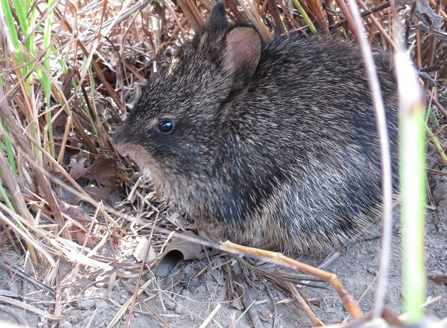

हिस्पिड खरगोशHispid Hare
Caprolagus hispidus · Leporidae · MAM-0045

- Scientific name वैज्ञानिक नाम
- Caprolagus hispidus (Pearson, 1839)
- Family कुल
- Leporidae
- Hindi हिंदी
- हिस्पिड खरगोश
- Local names स्थानीय नाम
- hispid hare, kada khargosh
- Status here यहाँ की स्थिति
- native
- Movement आवागमन
- Resident, here all year
- Known from कहाँ दर्ज
- Others have published records from the wider Awadh–Purvanchal plain, none yet from Basti–Ayodhya अवध–पूर्वांचल से दूसरों के प्रकाशित अभिलेख, बस्ती–अयोध्या से अभी नहीं
- IUCN IUCN
- EN
- Review समीक्षा
- not yet reviewed
When to look कब देखें
Present all year. साल भर मौजूद।
Tell it apart from इनसे अलग पहचानें
हिस्पिड खरगोश / Hispid Hare
Caprolagus hispidus (Pearson, 1839) — Leporidae
हिस्पिड खरगोश — हिमालय की तलहटी के तराई घास के मैदानों में रहने वाला एक अत्यंत दुर्लभ और संकटापन्न स्तनपायी। इसके कान छोटे, आंखें छोटी और बाल मोटे व कड़े होते हैं। ब्लैनफ़ोर्ड (1891) के अनुसार इसका वजन लगभग 5.5 पाउंड होता है। यह तराई के घने घास के मैदानों में छिपकर रहता है। वन्यजीव (संरक्षण) अधिनियम के तहत यह एक संरक्षित प्रजाति है।
Quick Identification त्वरित पहचान
| Feature | Description |
|---|---|
| Build & Size | Heavy, stout lagomorph; head and body 19 inches (Blanford 1891) |
| Ears | Very short, shorter than the skull (Blanford 1891) |
| Coat Texture | Fur coarse, bristly; fine underfur intermixed with coarse longer hairs (Blanford 1891) |
| Colour | Black mixed with brownish white above, producing general dark brown aspect (Blanford 1891) |
| Tail | Short, brown throughout, darker above (Blanford 1891) |
Field tip: Look for a stout hare with very short ears (shorter than the skull), small eyes, and coarse bristly fur of a general dark brown aspect; Jerdon placed it in the Terai, frequenting long grass and bamboos (Blanford 1891, p. 454).
हिंदी:
यह बहुत छोटे कानों (खोपड़ी से भी छोटे), छोटी आँखों और मोटे, कड़े बालों वाला खरगोश है, जिसका रंग कुल मिलाकर गहरा भूरा दिखता है। जर्डन के अनुसार यह तराई में लंबी घास और बाँस के बीच रहता है (ब्लैनफ़ोर्ड 1891)।
Morphology आकारिकी
Measurements as given by Blanford (1891, p. 454) for the Hispid Hare (Lepus hispidus):
| Measurement | Range |
|---|---|
| Head and body | 19 inches (Blanford 1891) |
Blanford (1891, p. 454) described the distinctive pelage and anatomy: "Ears very short, shorter than the skull. Eyes small. Fur coarse, bristly; underfur fine with the coarse longer hairs intermixed." Blanford (1891, p. 454) added: "Colour above black mixed with brownish white, producing a general dark brown aspect ... Tail brown throughout, darker above."
Weight was given by Blanford (1891, p. 454) as "5 1/2 lbs."
Vocalisations
Not available in consulted sources.
हिंदी:
ब्लैनफ़ोर्ड (1891) के अनुसार इसके सिर और शरीर की लंबाई लगभग 19 इंच और वजन 5.5 पाउंड होता है। इसके कान बहुत छोटे होते हैं और शरीर के बाल कड़े तथा कांटेदार होते हैं। परामर्शित स्रोतों में आवाजों का कोई विवरण उपलब्ध नहीं है।
Behaviour & Ecology व्यवहार और पारिस्थितिकी
Blanford (1891, p. 454) recorded the habits: "Habits very imperfectly ascertained. According to Hodgson the hispid hare inhabits the Sal forest, whilst Jerdon states with more probability that it is found in the Terai ..., frequenting long grass, bamboos, &c. It is said to burrow like a rabbit, but not to be gregarious. Its food, as Hodgson was informed by the Mechis, consists chiefly of roots and the bark of trees."
हिंदी:
ब्लैनफ़ोर्ड (1891) ने जर्डन के हवाले से दर्ज किया कि यह तराई के घने लंबे घास के मैदानों और बांस के झुरमुटों में रहता है और बहुत कम दिखाई देता है।
Life Cycle / Phenology जीवन चक्र
Not available in consulted sources.
हिंदी:
परामर्शित ऐतिहासिक स्रोतों में इसके जीवन चक्र और प्रजनन का विशिष्ट विवरण उपलब्ध नहीं है।
Host Plants or Prey आहार
Hodgson was informed that it lives on roots and the bark of trees (Blanford 1891, p. 454).
हिंदी:
हॉजसन की सूचना के अनुसार यह जड़ों और पेड़ों की छाल पर निर्वाह करता है (ब्लैनफ़ोर्ड 1891)।
Predators / Natural Enemies शत्रु
Not available in consulted sources.
हिंदी:
परामर्शित स्रोतों में इसके विशिष्ट प्राकृतिक शत्रुओं का कोई विवरण उपलब्ध नहीं है।
Agricultural / Human Relevance कृषि प्रासंगिकता
Conservation legal status: Protected under the Wildlife (Protection) Act, 1972.
हिंदी:
यह वन्यजीव (संरक्षण) अधिनियम, 1972 के तहत संरक्षित है।
Expected Locally स्थानीय रूप से अपेक्षित
Not a field record. Written from published accounts for eastern Uttar Pradesh. No confirmed local sighting yet — if you have seen it, that is what the atlas needs.
अभी तक स्थानीय पुष्टि नहीं। यह विवरण प्रकाशित स्रोतों से है, किसी अवलोकन से नहीं।
GBIF holds published records from the wider plain: two iNaturalist records from Lakhimpur Kheri, 21 and 27 March 2026, by a single observer, reporting pellets rather than the animal ("Old pellets visible after grassland got burnt"; "Pellets in a grassland. Rhino enclosure."), with coordinates blurred. A photograph with place and date would constitute a first record for the atlas.
हिंदी:
लखीमपुर खीरी से मार्च 2026 में एक ही प्रेक्षक द्वारा दर्ज दो iNaturalist रिकॉर्ड केवल लीड़ियों (पेलेट्स) के हैं, जीवित प्राणी के नहीं। इसके निर्देशांक धुंधले किए गए हैं। बस्ती या अयोध्या से कोई रिकॉर्ड नहीं है। स्थान और तारीख के साथ एक फोटो एटलस के लिए पहला रिकॉर्ड होगी।
Distribution वितरण
Global range: Endemic to the southern Himalayan foothills; Blanford (1891, p. 454) noted: "The tract along the foot of the Himalayas from Gorakhpur to Upper Assam".
In India: Blanford (1891, p. 454) noted the range along the Himalayan Terai.
In Uttar Pradesh: Two iNaturalist records, Lakhimpur Kheri, 21 and 27 March 2026, by a single observer, reporting pellets rather than the animal ("Old pellets visible after grassland got burnt"; "Pellets in a grassland. Rhino enclosure."), with coordinates blurred.
In Basti district / eastern UP: GBIF holds no record from Basti or Ayodhya.
हिंदी:
ब्लैनफ़ोर्ड (1891) के अनुसार यह गोरखपुर से लेकर ऊपरी असम तक हिमालय की तलहटी में पाया जाता था। उत्तर प्रदेश में लखीमपुर खीरी से केवल पेलेट्स के रिकॉर्ड हैं। बस्ती या अयोध्या से कोई रिकॉर्ड नहीं है।
Research Questions शोध प्रश्न
- What field evidence reliably distinguishes Caprolagus hispidus pellets from those of Lepus nigricollis in Terai grasslands? / तराई के घास के मैदानों में हिस्पिड खरगोश की लीड़ियों को भारतीय खरगोश से अलग पहचानने के क्या प्रमाण हैं?
- What historical records document the western boundary of the species between Gorakhpur and Kheri? / गोरखपुर और खीरी के बीच इस प्रजाति की पश्चिमी सीमा को कौन से ऐतिहासिक रिकॉर्ड प्रमाणित करते हैं?
- How do seasonal grassland burns affect the detectability of sub-fossil and fresh pellets in habitats shared with Swamp Deer?
- What non-invasive photographic methods are effective for documenting the presence of nocturnal grassland lagomorphs?
- What specific botanical survey of tall grass habitats is needed to determine the survival of suitable cover in eastern UP?
हिंदी:
1. तराई के घास के मैदानों में हिस्पिड खरगोश की लीड़ियों को भारतीय खरगोश से अलग पहचानने के क्या प्रमाण हैं?
2. गोरखपुर और खीरी के बीच इस प्रजाति की पश्चिमी सीमा को कौन से ऐतिहासिक रिकॉर्ड प्रमाणित करते हैं?
Similar Species मिलती-जुलती प्रजातियाँ
| Species | How to tell apart | हिंदी | |
|---|---|---|---|
| [[black_naped_hare | Indian Hare / Black-naped Hare]] (Lepus nigricollis) | Much longer ears; softer greyish-brown fur; distinct black velvety patch across nape | खरगोश |
Field rule: The Hispid Hare is separated from the Indian Hare by its very short ears (shorter than the skull), small eyes, coarse bristly coat, and tail brown throughout, darker above (Blanford 1891, p. 454).
Taxonomy & Classification वर्गीकरण
Original description. Described by J. T. Pearson in 1839 in Proceedings of the Zoological Society of London (vol. 1838, p. 152), under the binomial Lepus hispidus, with type locality designated as northern Bengal.
Subspecies. Monotypic. Blanford (1891, p. 454) noted that it "should perhaps be placed in a distinct genus Caprolagus".
Family and order placement. Order Lagomorpha, family Leporidae, genus Caprolagus.
Phylogenetic notes. Not available in consulted sources.
IUCN status rationale. Evaluated as Endangered (EN) on the IUCN Red List (Aryal & Yadav 2019).
हिंदी:
जे. टी. पीयर्सन ने 1839 में इसका वर्णन किया था। ब्लैनफ़ोर्ड (1891) ने इसे एक अलग जीनस 'कैप्रोलैगस' में रखने का सुझाव दिया था। आईयूसीएन रेड लिस्ट में यह 'संकटापन्न' (Endangered) श्रेणी में है।
Photo Gallery फोटो गैलरी
No photos yet — add field photos to media/species/hispid_hare/ and run node scripts/sync_photos.js.
Photos needed आवश्यक फोटो
- [ ] Individual showing very short ears and bristly coat (छोटे कानों वाला हिस्पिड खरगोश)
- [ ] Characteristic pellet cluster in grassland habitat (घास के मैदान में लीड़ियों का समूह)
References संदर्भ
- Pearson, J. T. (1839). In M'Clelland, J. Description of the Hispid Hare, Lepus hispidus. Proceedings of the Zoological Society of London, vol. 1838, p. 152.
- Blanford, W. T. (1891). The Fauna of British India, Including Ceylon and Burma. Mammalia. Part II. Taylor & Francis, London, pp. 454–455 (as Lepus hispidus).
- Prater, S. H. (1971). The Book of Indian Animals. 3rd ed. Bombay Natural History Society, Bombay.
- Menon, V. (2014). Indian Mammals: A Field Guide. Hachette India, Gurgaon.
- Aryal, A. & Yadav, B. (2019). Caprolagus hispidus. The IUCN Red List of Threatened Species 2019: e.T3833A45176688. doi:10.2305/IUCN.UK.2019-1.RLTS.T3833A45176688.en
- GBIF Occurrence Data — Caprolagus hispidus, India (2025).
Source file: species/fauna/mammals/hispid_hare.md